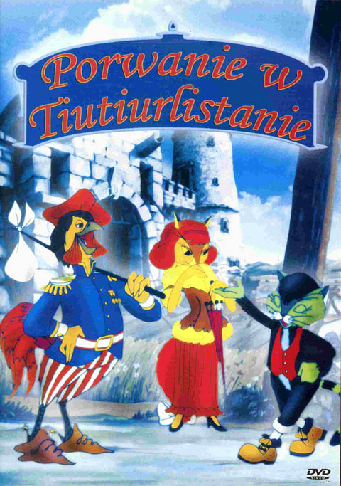
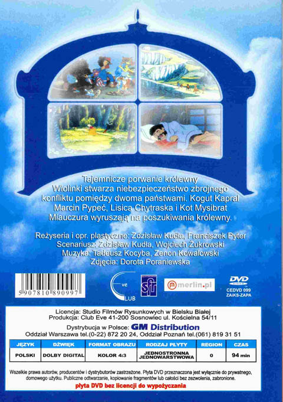

Porwanie w Tiutiurlistanie
Tajemnicze porwanie królewny Wiolinki stwarza niebezpieczeństwo zbrojnego konfliktu pomiędzy dwoma państwami. Kogut Kapral Marian Pypeć, Lisica Chytraska i Kot Mysibrat Miauczura wyruszają na poszukiwania królewny.
Film animowany na podstawie książki Wojciecha Żukrowskiego.

